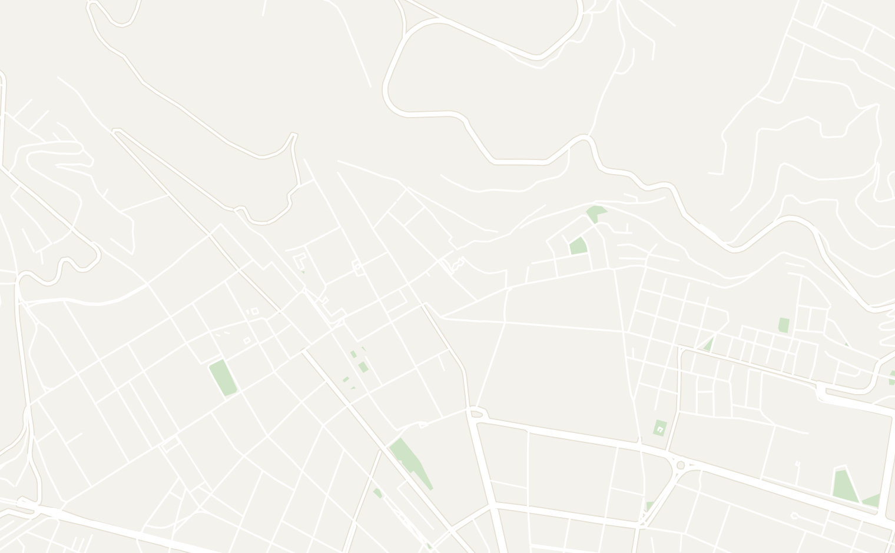
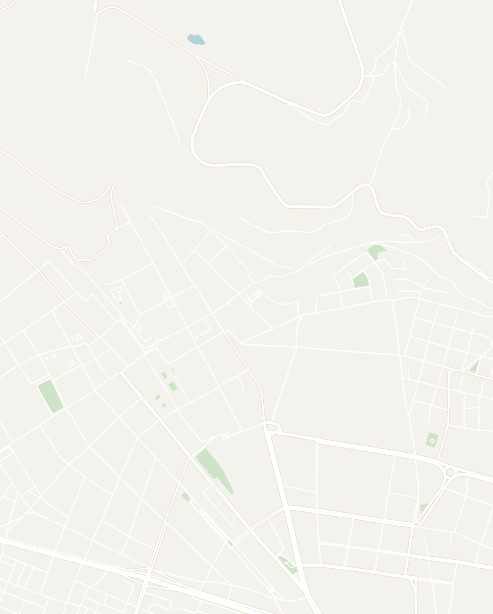
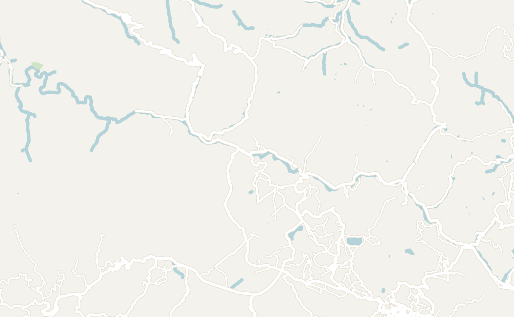
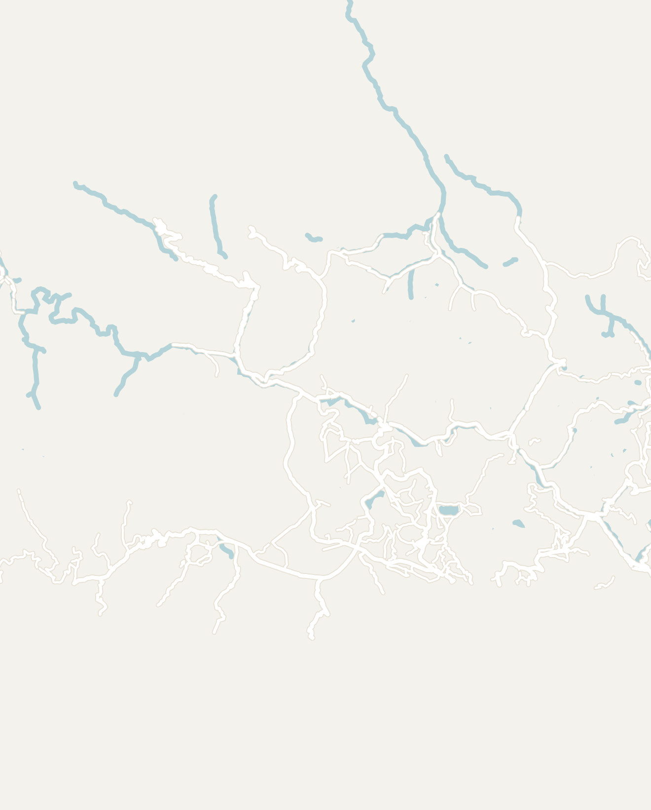
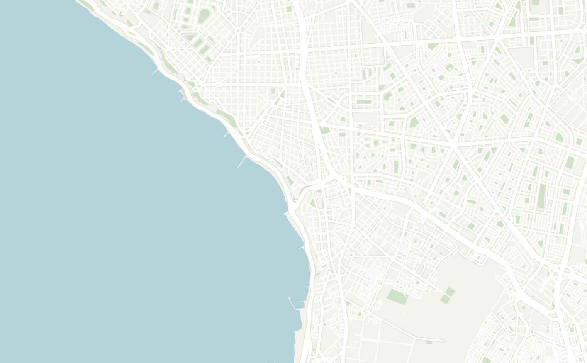
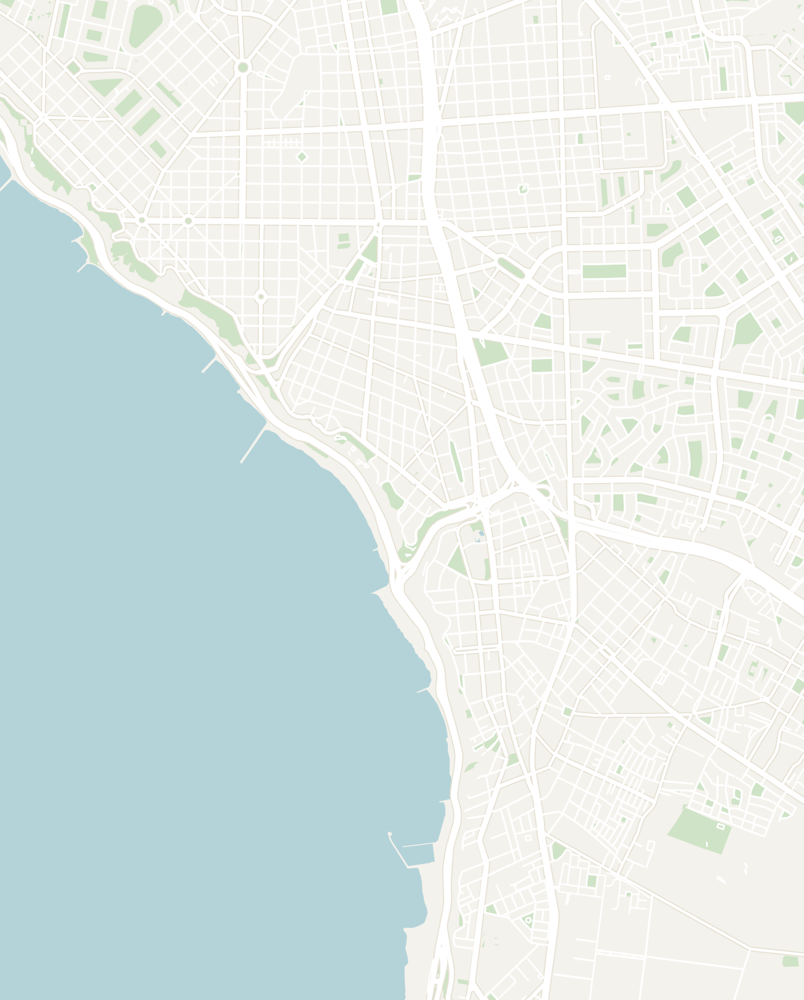

General
Peru is one of the most fascinating countries in South America. It is the ultimate adventure destination with ancient Incan sites, world-class treks and a culture still heavily influenced by indigenous heritage. It is my favorite destination on the continent and one I always recommend for anyone looking for a safe, cheap, and interesting trip.
- Flights — all international flights go in and out of Lima, so plan accordingly
- Ridesharing — Uber works throughout the country and is a safe, convenient way to get around
- Buses — long distance buses are surprisingly nice. My night bus from Puerto Maldonado to Cusco had reclining sofa-style seats, a TV screen and a curtain. Your ears will pop the whole way as the elevation climbs (~9 hours)
- Safety — Peru is super safe, especially in touristy areas. Practice standard safety precautions, but there isn't much to worry about. Peruvians are friendly and helpful
- Altitude — popular locations including Cusco, Machu Picchu and Sacred Valley are all at very high elevation. You will immediately feel shortness of breath, so give yourself a day or two to acclimate before heading off on any hikes. Many hotels offer coca leaves, Manzanilla Tea (chamomile) and candies that will help your body acclimate
- Budget & Cash — Peru is probably the cheapest South American country I visited. It's important to always carry cash, but most touristy restaurants and attractions take card
- Food — one of the most unique aspects of Peru is the cuisine. Worth branching out to try Ceviche, Lomo Saltado, a sweet purple corn drink called Chicha Morada and "Cuy" (Guinea Pig) for the adventurous
- How Long to Spend — for a first timer, I would recommend 2–3 weeks to see the key sites
Cusco
2 days in the city + additional days for day tripsCusco was one of my favorite cities in South America and the perfect base for exploring Peruvian culture. The city is absolutely packed with activities and historical sites. On every street corner you can feel the rich cultural heritage, from a local musician playing ancient Incan instruments to magnificent Spanish colonial architecture.
- Boleto Turístico — perhaps the most useful ticket to purchase in Peru. An all-inclusive ticket for many sites in Cusco and Sacred Valley, lasting 14 days. Here is a full list of sites. Must be purchased in person at the main tourism office
- Plaza de Armas / Cusco Cathedral — the town center, surrounded by Spanish colonial architecture. In the center there is a fountain with a gold statue of the last Incan emperor
- Don't miss the local parade every Sunday morning around 11am: military, teachers, lawyers, government workers and groups in wild colorful traditional costumes
- Free walking tour of the historic center — highly recommended. Covers Plaza de Armas, Incan stone walls, San Blas viewpoint and a local fruit tasting at San Blas Market. About 2 hours
- Saqsaywaman — pronounced like "sexy woman", ancient Incan ruins at the top of the hill with llamas, an ancient slide and a nice view of the city. No mortar used anywhere — just perfectly stacked boulders that puzzle archaeologists to this day
- San Blas Market — mini food market with super cheap food. Try local fruits: Granadilla (like passion fruit), Aguaymanto (yellow cherry, tastes like sour candy), Tuna (sweet cactus fruit) and Chirimoya (creamy, similar to soursop)
- Pro Tip: There is also a food court here with a "Menu del Dia" served by local women, basically a 3 course meal for around 8 soles / ~$2
- Viewpoints of the city
- Mirador de Plaza San Cristóbal — the best viewpoint in Cusco, in the courtyard of a church. On a clear day you can see Plaza de Armas below and the mountains across the city
- Mirador desde el Cristo Blanco — white Jesus statue similar to Christ the Redeemer in Rio, right next to Saqsaywaman. Quick stop
- San Blas Viewpoint
- Siete Borreguitos — famous Instagrammable street in San Blas District lined with flower pots
- Q'enco Archaeological Complex — ancient Incan burial ground about 20 minutes walk from Saqsaywaman. Main feature is a series of underground caverns
- Sapantiana Aqueduct — colonial-era irrigation system in San Blas neighborhood. Quick stop
- Museums
- Regional Historical Museum of Cusco — covers pre-Incan civilizations through the Spanish Inquisition. Highlights: a glyptodont skeleton (giant armadillo ancestor, about 4 feet long) and an exhibit on Tupac Amaru, a failed Peruvian revolutionary against Spanish rule
- Inka Museum — main Incan museum in Cusco. Doesn't take too long and has English descriptions everywhere
- Most day trips from Cusco start extremely early — 3AM–5AM wake up times are normal, so plan to go to sleep early
- Rainbow Mountain Day Trip — a tour to the famous 7-color Rainbow Mountain. Tours start at 3AM with a buffet breakfast included on the way. The hike reaches extremely high elevation (5,200m / 17,060ft) — you'll need to stop every 10 minutes to catch your breath. There's also the option to take a horse up. Expect to pay ~$49 for the full day trip
- Don't miss the bonus hike to Red Valley on the side, much less crowded and just as beautiful. Go early before the lines get long
- Humantay Lake Day Trip — hike to a beautiful bright blue lake surrounded by mountains. Only ~$24 for a full tour. Early start, high elevation, option to take a horse up
- Machu Picchu (as a day trip) — possible but not advised unless you are very short on time. The area around Machu Picchu is gorgeous and worth spending a few days
- Sacred Valley (as a day trip) — I'd recommend spending a few days here, but a day tour is also viable (Sacred Valley Tour or Moray and Maras Salt Mines tour)
- Mr. Cuy Restaurant — great place to try guinea pig. Order the Cuy al Horno (baked guinea pig) — it comes topped with a hat and Peruvian blanket. Tastes like a saltier Peking duck, all dark meat with super crispy skin. Comes with a complimentary pisco sour and sides: Peruvian corn, potatoes, papa rellana, sweet tamale and green herbal sauce
- Chira Restaurante — popular with locals. Famous for anticuchos (traditional Andean skewers — one chicken, one beef heart) in a spicy sauce served with large kernel Peruvian corn
- Xapiri Ground — the best coffee shop in Cusco with a little museum inside
- Qosqo Maki Panadería — modern upscale bakery, great for breakfast
- Café Panam — good carne empanadas with a yellow corn casing (different from the Argentinian breaded version)
- Los Toldos Chicken — popular fast food spot for locals. Try the Salchipapa (fried hotdog on fries) and fried chicken. ~14 soles / ~$4
- Stay anywhere in the historic center walking distance to Plaza de Armas. San Blas neighborhood is also a popular option, nice and close to downtown, but uphill
- Viajero Kokopelli — nice hostel in the Centro Histórico. Part of the larger Viajero chain; offers tours, laundry service and complimentary coca leaf tea for altitude adjustment
- Note that people wake up very early for tours (4AM–5AM) so keep this in mind if you book a dorm


Double-tap to open in Google Maps
Machu Picchu
One of the seven wonders of the world and an absolute must while in Peru. Buy your tickets well in advance — the most popular options sell out and you'll need to wait at the ticket office the night before in Aguas Calientes if you don't.
Avoid the rainy season (November to March) — many people make the mistake of traveling all the way there and not being able to see it due to the weather.
I would recommend a multi-day trek over a single day trip since it is much more rewarding:
- Inca Trail (4 days) — the most popular option. You arrive through the "Sun Gate," the traditional Incan entrance with one of the best views. Book 6 months in advance as it consistently sells out
- Salkantay Trail (5 days) — considered more beautiful than the Inca Trail, but also more challenging
- Inca Jungle Trail (4 days) — an alternative route mixing 4 adventure sports: hiking through the Peruvian jungle, biking 50km downhill through clouds, white water rafting on the Lucumayo River with a stop at a hidden waterfall, and ziplining. I did this and had a blast
- Machu Picchu Reservations — the company I booked with. By far the cheapest prices, but be prepared for very barebones accommodation
- Stay in Aguas Calientes town the night before and walk up the stairs to the main entrance or take a bus for $10. Arrive early before the crowds from Cusco. The town itself is gorgeous with cute shops and restaurants
- Or arrange a single day tour from Cusco — the fastest option
- Buy in advance on the government website — they sell out quickly and it is very important to choose the right circuits
- Buy Circuit 1 or 2 tickets — this has the traditional view of Machu Picchu. You won't see much if you choose the other circuits
- If you're up for a workout, add Circuit 4 and Waynapicchu, climbing stairs for 45 minutes to an hour, but gives you a bird's eye view of the entire complex
Sacred Valley
1–2 days recommendedThe Sacred Valley is often overlooked for Machu Picchu. It is home to a variety of ancient Incan towns still inhabited by their descendants, and there aren't many tourists here which adds to the mystical feel.
Hire a driver to hit all of these in a single day (~180 soles / ~$50). Each site takes 30 min to 1 hour with driving in between. You can also explore via public transport or tour.
- Ollantaytambo — where the train goes to Machu Picchu town, so consider spending the night here. The ruins have a cool sun temple complex overlooking the town
- Maras Salt Mines — beautiful salt mines with white pools embedded in a valley. Great viewpoint overlooking the area
- Moray — circular Inca crop circles. Similar to rice terraces across Asia, the Incans used these alien-looking structures for agriculture
- Chinchero — small colonial town with a Spanish church built on Incan ruins
- Pisac — I didn't personally go but people love it. More hippy vibes and popular for Ayahuasca ceremonies
- Apu Veronica Restaurant (Ollantaytambo) — one of my favorite restaurants in Peru, right next to a river
- Casa Samay Mountain View — very lowkey hostel with almost no other travelers. The roof is perfect for stargazing at night


Double-tap to open in Google Maps
Lima
2–3 days recommendedLima is Peru's capital on the Pacific Coast. Often skipped in favor of Cusco and Machu Picchu, it has a number of unique attractions worth visiting. The city reminds me a lot of Santa Monica with the seaside bluffs and highway along the ocean.
- Walk along Malecón de Miraflores — path along the bluffs from Miraflores to Barranco. Strong Santa Monica vibes. Stop by Love Park, Larcomar and the Navy Lighthouse along the way
- Swim with Sea Lions on Palomino Islands — my favorite thing to do in Lima. Sea lions are normally aggressive toward humans but on the Palomino Islands they are playful and will swim right up to you. The water is cold so they give you a wetsuit and life jacket. ~$75 and takes the whole day
- Lima Basílica and Convent of San Francisco — church with catacombs beneath with 70,000 people buried there. One of the oldest surviving buildings in all of Latin America. Guided tour required
- Paragliding over the Coast Verde — great view of Lima and the coast. Offered on a "trike" (go-kart with a huge fan on the back). Only ~$50
- Larco Museum — cool museum with tons of pre-Incan pottery. The erotic pottery collection is funny
- Barranco Neighborhood — the bohemian neighborhood with historic buildings, parks, churches and street art
- Huaca Pucllana — ruins from the Lima civilization right in the center of Miraflores. Guided tour required
- Popular de aquí y de allá — solid Peruvian restaurant in Larcomar. Try the Tiger's Eye Ceviche
- Especiale Ice Cream — amazing ice cream shop in Barranco
- Lima isn't very walkable outside of specific neighborhoods — rely on Uber to get around
- Miraflores neighborhood — most modern and safe, central location for most tourist attractions
- Rainbow Hostel — popular, well-kept and social
- Barranco neighborhood — the bohemian option, popular with younger travelers


Double-tap to open in Google Maps
Puerto Maldonado (Amazon Jungle)
3–4 day tourThere are two main spots to visit the Amazon in Peru: Puerto Maldonado in the south and Iquitos in the north. Puerto Maldonado is better connected and the more affordable option. Book a tour for 3–4 days. Get there via a short flight from Lima or Cusco, or the night bus from Cusco (~9 hours, reclining sofa-style seats).
- Paradise Yakari Amazon Tours — I did a 4 day tour and absolutely loved it. $330 all-inclusive for 4 days. Nice lodge on the Rio Los Dios with great food and an incredibly knowledgeable guide named Bryan (Instagram). Here's what the days look like:
- Day 1: Farm tour of the lodge grounds (cacao, papaya, achiote, termite nests), Monkey Island by kayak (feed brown and white capuchin monkeys), night animal hunt by boat (capybaras and baby white caimans)
- Day 2: Macaw Clay Lick at 4:25am — macaws and parakeets eat clay from riverside cliffs for minerals. White sloths in the trees on the way back. Canopy walk, suspension bridges and zipline above the rainforest. Lake Sandoval — paddle a canoe through a jungle channel to a beautiful reflective lake, look for giant river otters, squirrel monkeys and howler monkeys
- Day 3: Piranha fishing (harder than it sounds; they just nibble). Native village visit — face painting, traditional songs, fire-making demo, bow and arrow
- Day 4 add-on: Taricaya Ecoreserve animal sanctuary (~70 soles / ~$18 extra). Rescues animals from captivity. Saw toucans, emperor tamarin monkey, baby river otter, spectacled bear, small black jaguar and spider monkeys. Definitely worth adding
- Tambopata Hostel — basic and cheap. Loud, hot and very humid. Passable for a night before or after your tour if you just need somewhere to sleep
- Burgos's — best restaurant in town. Try the Pollo en Salsa de Sachaculantro (chicken breast in green cream sauce)
- Meysis Garden — try the Marina Tres: ceviche, chaufa (local fried rice) and fried squid
Other Places to Consider
I'll definitely be planning another trip to Peru. Here are some destinations recommended by other travelers:
- Huaraz — the capital for hiking in northern Peru. Home to the famous Laguna 69, Santa Cruz Trek and Cordillera Huayhuash
- Arequipa — the second largest city in Peru with beautiful colonial architecture
- Huacachina — a small oasis town in southern Peru surrounded by massive sand dunes. Famous for dune buggies and sandboarding